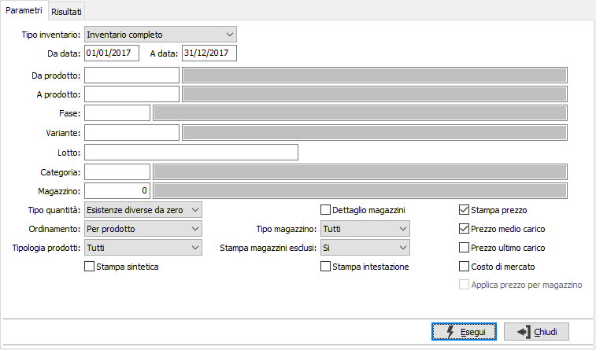
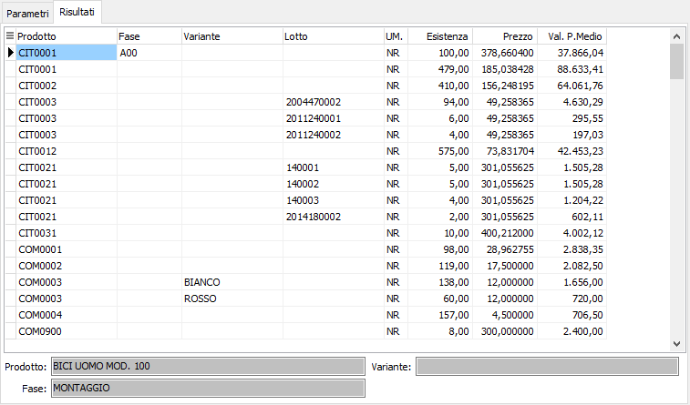

Stampa inventario
Il programma produce la analisi a video e la stampa degli inventari di magazzino per fasi oppure globale, comprendente anche i dati derivanti dal magazzino base.

TIPO INVENTARIO: definisce la tipologia dell'inventario: inventario completo, magazzino fasi e magazzino base, oppure inventario del solo magazzino fasi.
DA DATA: eventuale data da cui deve iniziare l’analisi dei movimenti di magazzino. Confermando a vuoto, l’analisi inizia con il primo movimento valido.
A DATA: eventuale data con cui si desidera terminare l’analisi dei movimenti di magazzino. Confermando a vuoto, l’analisi si conclude con l'ultimo movimento valido.
DA PRODOTTO: eventuale codice dell'articolo, presente in anagrafica Prodotti, da cui si desidera iniziare la selezione dei movimenti di magazzino. Confermando a vuoto, la selezione inizia con il primo prodotto valido. Sul campo è attiva la ricerca (F9) sull’anagrafica prodotti.
A PRODOTTO: eventuale codice dell'articolo, presente in anagrafica Prodotti, a cui si desidera terminare la selezione dei movimenti di magazzino. Confermando a vuoto, la selezione termina con l’ultimo valido. Sul campo è attiva la ricerca (F9) sull’anagrafica prodotti.
FASE: eventuale codice della fase di lavorazione, per cui si desidera effettuare la selezione di analisi. Confermando a vuoto, la selezione considera tutte le fasi di lavorazione. Sul campo sono attive le funzioni di ricerca (F9).
COMMESSA DI PRODUZIONE: se gestito in configurazione l'utilizzo della commessa di produzione è possibile limitare l'inventario ad un'unica commessa di produzione inserendola in questo campo.
CATEGORIA MERCEOLOGICA: eventuale codice della categoria merceologica a cui si vuole restringere la selezione di analisi. Sul campo è attiva la ricerca (F9) sulla tabella Categorie merceologiche.
MAGAZZINO: eventuale codice del magazzino a cui si vuole restringere la selezione di analisi. Confermando a vuoto, l’esistenza del prodotto si riferisce a tutti i magazzini. Sul campo è attiva la ricerca (F9) sulla tabella Magazzini.
TIPO QUANTITÀ: combo box per filtrare le esistenze negative. Valori ammessi: Tutte le esistenze; Esistenze diverse da 0; Solo esistenze negative.
ORDINAMENTO PER: combo box per definire i criteri di ordinamento. Valori ammessi: Per prodotto; Per Magazzino
TIPOLOGIA PRODOTTI: combo box per definire la tipologia dei prodotti da elaborare. Valori ammessi: tutti, escluso prodotti fuori inventario, solo prodotti fuori inventario.
STAMPA SINTETICA: definisce se effettuare la stampa del report in formato sintetico (casella con segno di spunta).
DETTAGLIO MAGAZZINI: check box per definire i criteri di visualizzazione in caso di presenza in più magazzini dello stesso prodotto. Valori ammessi: vuoto = visualizza il totale dei magazzini; spunta = visualizza analiticamente i singoli magazzini.
TIPO MAGAZZINO: combo box per definire la tipologia di magazzino da elaborare. Valori ammessi: tutti, di proprietà, di terzi.
STAMPA MAGAZZINI ESCLUSI: indica se nella selezione si desidera i magazzini normalmente esclusi dalla stampa dell’inventario. Valori ammessi: No, Si, Solo esclusi.
STAMPA INTESTAZIONE: Indica se stampare una pagina con i criteri di selezione della stampa, l’operatore che l’ ha eseguita, la data e l’ora (casella con segno di spunta).
STAMPA PREZZO: indica se si intende stampare oltre al valore anche il prezzo unitario dell’articolo; in questo caso sarà possibile selezionare solo uno fra i dei criteri di valutazione specificati di seguito.
PREZZO MEDIO CARICO: abilita la stampa della colonna relativa al valore calcolato a prezzo medio di carico (casella con segno di spunta).
PREZZO ULTIMO CARICO: abilita la stampa della colonna relativa al valore calcolato a prezzo ultimo carico (casella con segno di spunta).
COSTO DI MERCATO: abilita la stampa della colonna relativa al valore calcolato a costo di mercato (casella con segno di spunta).
APPLICA PREZZO PER MAGAZZINO: attivo solo se si sceglie di stampare il prezzo ed utilizzare il prezzo medio o costo ultimo: il prezzo in oggetto viene calcolato sul singolo magazzino e non generico per prodotto (casella con segno di spunta). In mancanza del prezzo medio/costo ultimo verrà utilizzato il prezzo medio/costo ultimo complessivo dell'articolo.
Confermando tramite pressione del bottone Esegui, viene avviata la selezione e richiamata la finestra video Risultati. La finestra video riporta le esistenze ed eventualmente il prezzo selezionato ed il relativo valore relativi agli articoli selezionati in relazione ai criteri espressi. Nella parte bassa della finestra vengono riportate le descrizioni del prodotto e della fase attualmente selezionata in griglia.
Cliccando sui bottoni anteprima di stampa o stampa della tool bar, si avviano le relative funzioni.
In presenza di dettagli varianti o lotti, alla stampa analitica per dettagli, seguirà un report sintetico per prodotto fase.
